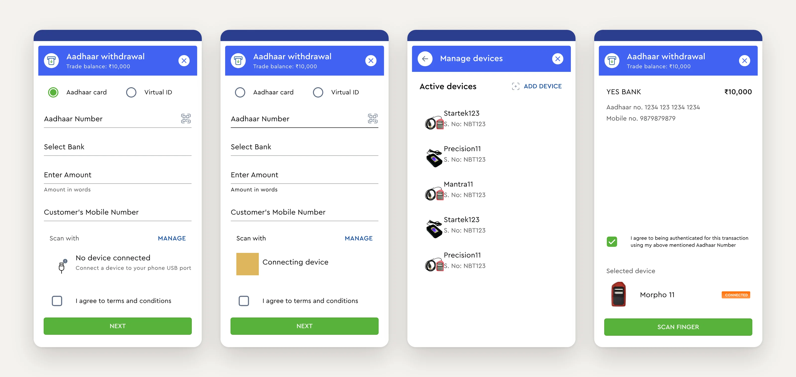
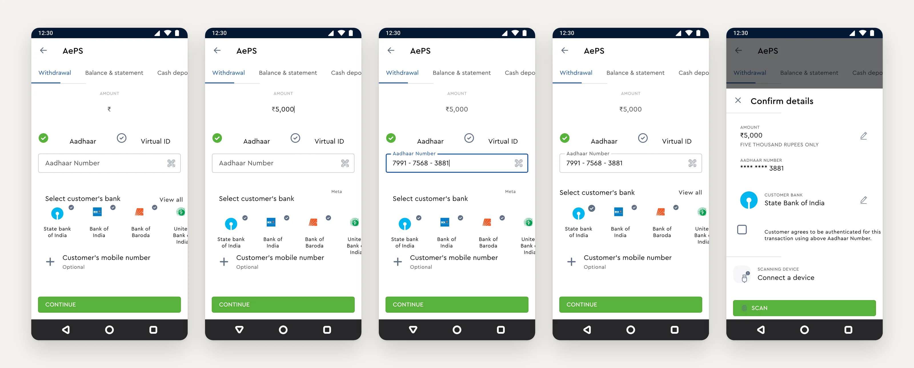
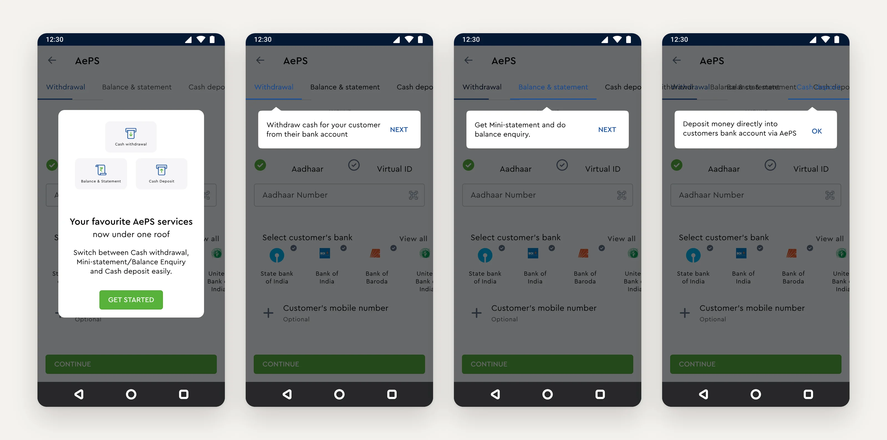
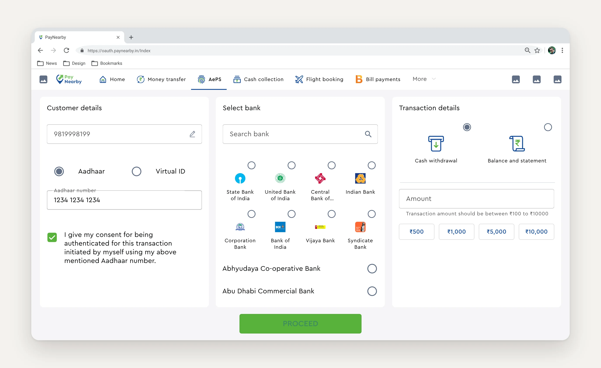
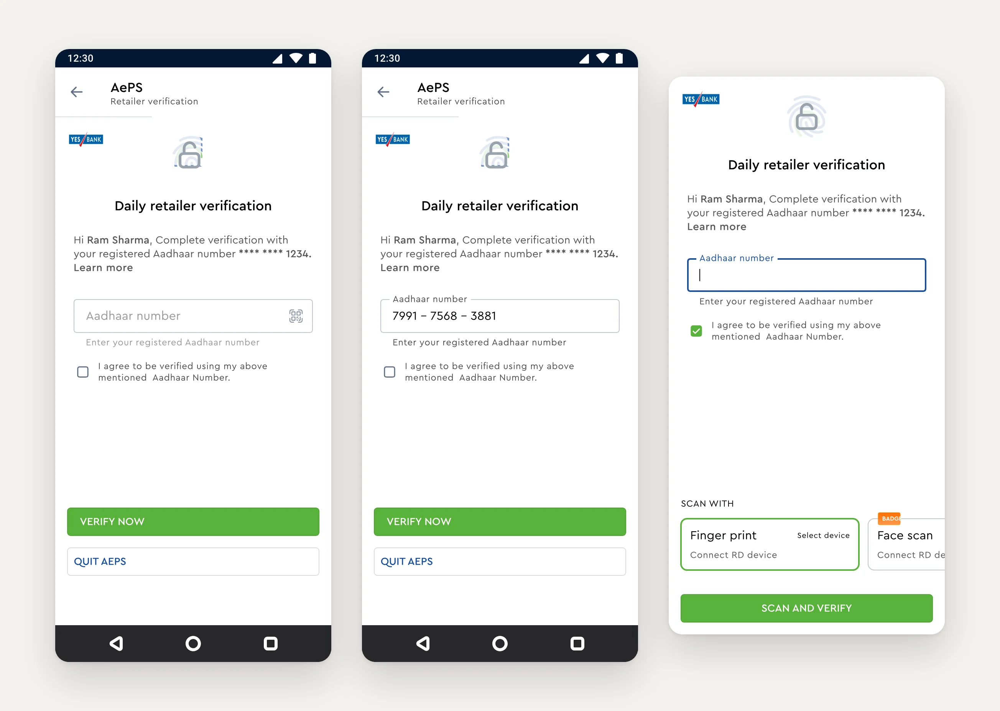
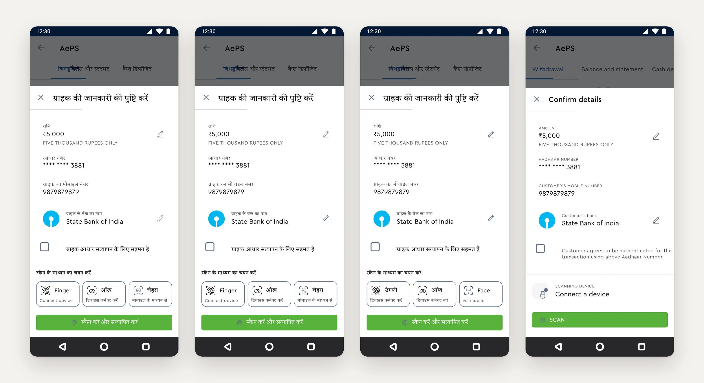
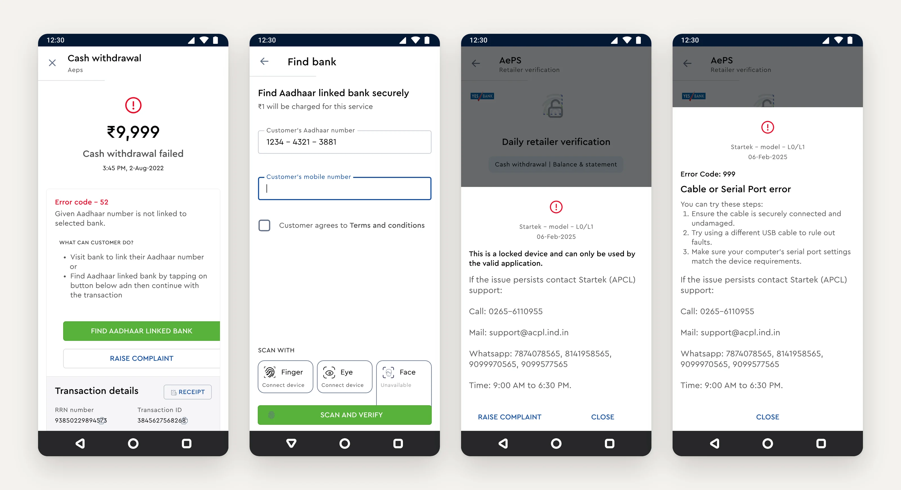
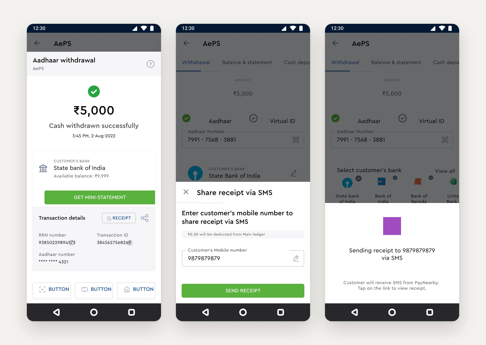
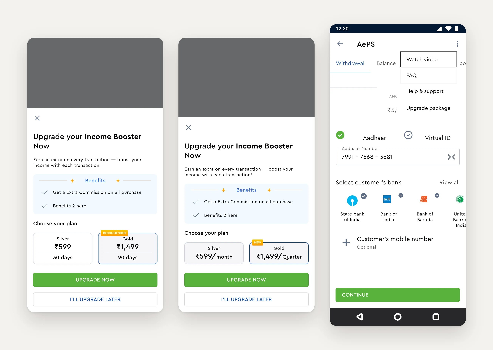

Why this flow matters
For a lot of rural and semi-urban India, the nearest “bank” is the kirana or mobile-recharge shop down the road. Government benefits and wages land in Aadhaar-linked accounts, and people withdraw them in cash at a PayNearby counter. The retailer earns a commission on every transaction, so a slow or failing flow costs them money and costs the customer trust.
retail partners across 20,000+ PIN codes
in AePS transactions in FY20–21 alone
of banking transactions happen between 3 and 9 pm, when shops are busiest
of women customers withdrew cash with face authentication (2025)
Sources: PayNearby Retail-O-Nomics 2024, FY20–21 release, Women Financial Index 2025.
Where it started
The old flow put everything on one long form: Aadhaar or Virtual ID, the number, a bank dropdown, amount, the customer’s mobile number, the scanner and the consent checkbox. The biometric device lived in a separate “Manage devices” list, so a scanner that wasn’t connected only showed up when the retailer reached the bottom of the form. There was no moment to check the details before the customer put their finger down.

The redesign
I rebuilt the flow around how a retailer actually serves someone at the counter: pick the service, type the amount, take the Aadhaar number, tap the bank, confirm, scan.
Three services, one screen
Withdrawal, Balance & statement and Cash deposit became tabs, so switching service never meant starting over.
Amount first, in words too
The amount is the big, first field, and it’s repeated in words (“Five thousand rupees only”) so nobody misreads a zero.
Banks as faces, not a dropdown
The most-used banks show up as tappable logos, with “View all” and search for the rest.
Confirm before you scan
A bottom sheet repeats the amount, masked Aadhaar and bank, each editable in place, with consent and the scanning device in one view.
Device status where it’s needed
The scanner’s state sits right above the Scan button, so a disconnected device is caught before the customer is asked for a finger.
A receipt worth sharing
The success screen leads with the amount and bank balance, with mini statement, receipt and transaction IDs one tap away.

Because the change was big for people who used AePS every day, the first launch walks retailers through it: one card announcing the services “now under one roof”, then a tooltip on each tab.

The web portal
Retailers on a desktop got the same logic laid out side by side: customer, bank and transaction in three columns, all on one screen. Quick amounts (₹500 to ₹10,000) and the allowed range sit under the amount field. This is the version we put through usability testing.

Two years of changing rules
Shipping the redesign was the start. AePS sits under NPCI and RBI rules, and new scanners kept arriving, so I kept designing it month after month. A few of the changes:
Verifying the retailer, every day
A new NPCI rule asked retailers to verify themselves with their own biometrics before AePS transactions, in addition to the customer’s scan. The two checks couldn’t be merged, and the retailer’s Aadhaar number couldn’t be carried to the next screen, so verification lives in its own focused step with a bottom sheet for the scan.

Finger, eye or face
As iris scanners and face scan joined fingerprints, I replaced the device line with one picker that shows the method, the device and its connection state: not selected, selected but not connected, connected, auto-detected, or unavailable. “Iris scan” became “Eye” with an icon, because that’s what retailers recognised. The picker works in Hindi as well as English.

Errors that lead somewhere
The most common failure, error 52, means the Aadhaar number isn’t linked to the bank the retailer picked. Instead of a dead end, the failure screen now says what the customer can do and offers “Find Aadhaar linked bank”, a small paid lookup that gets the transaction back on track. Scanner errors name the device model and give the vendor’s support details, so retailers aren’t left guessing whose problem it is.

Receipts and earnings
Retailers wanted to give customers proof of the transaction without spending printer ink, so receipts can now be sent by SMS. Before designing it I listed the risks: a shared link being mistaken for fraud, failed deliveries, refunds and who pays for messages. Later, Income Booster plans let retailers pay a small fee to earn extra commission on every transaction.


What happened next
By 2025, PayNearby reported that 40% of women customers were withdrawing cash with face authentication. In 2026, after cases of photo and video spoofing, NPCI withdrew face authentication for AePS cash withdrawals and Aadhaar Pay. It is still allowed for balance enquiry, mini statement and cash deposit.
Because the method picker already had an “unavailable” state, a change like that is a switch in the flow, not a redesign. That’s the lesson I took from AePS: in regulated payments, treat every rule as something that will change, and design the slot it lives in.
Sources: PayNearby Women Financial Index 2025, RD Service, Mantra.